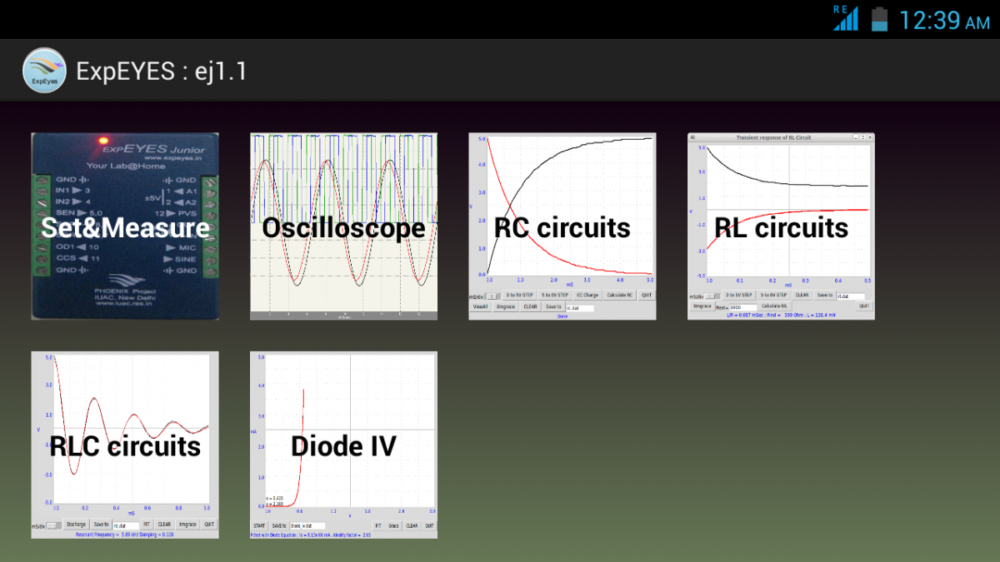
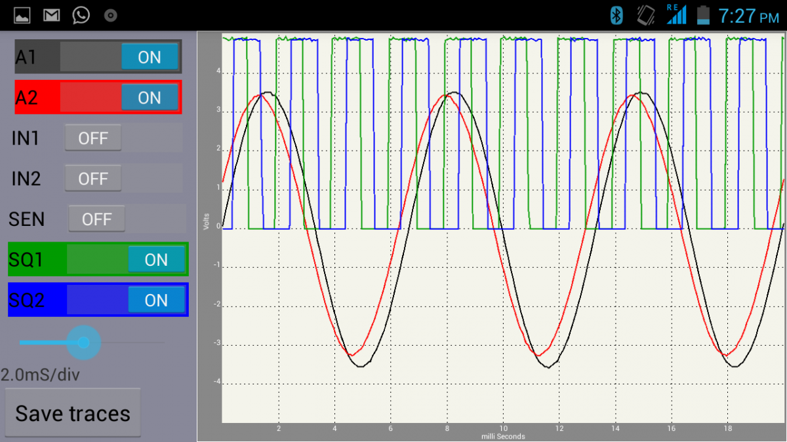

Android
support of ExpEYES-17 is not yet developed.
Reducing the Total cost (ExpEYES + the Computer) has been one of our goals. ExpEYES was tested earlier on the Aakash2 tablet running GNU/Linux. However most of the tablets currently available in the market comes with Android installed. The Android version of the ExpEYES software makes use of that to reduce the total cost. It can also be installed from Google play store. The source files are HERE. You need to have an OTG cable (the one used for connecting pendrive to tablet) to connect ExpEYES. Works only on Android versions 4.0.0 and above. Requires USB OTG support in hardware and the USB API software in the OS.
The downside of the Android version is that one cannot write simple Python scripts to develop new experiments, as done on the GNU/Linux version. An option to execute a sequence of function call is provided to remedy this.
|  |  |
| The Opening Screen of ExpEYES program | The Oscilloscope Screen |
The Android version is contributed by Jithin B P , IISER Mohali, (jithinbp at gmail.com).